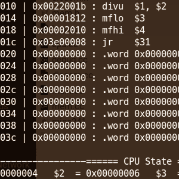

I'm a passionate Systems Programmer who enjoys building robust, performant, and elegant low-level software. I've done my fair share of projects in C, C++, and Javascript, though nowadays, my language of choice has to be 🦀 Rust 🦀.
Outside of work, I enjoy working on various open source and side-projects. You can find links and info about most of the projects I've worked on below. For the most up-to-date info on what I've been working on, check out my Github profile.
I'm currently based in Seattle, WA, working on the Azure IoT Edge team at Microsoft, where I'm writing a bunch of Rust code for the open-source IoT Edge Security Daemon.
I graduated from the Software Engineering program at the University of Waterloo in April 2020.
Over the course of my 5-year undergrad, I had the chance to intern at a whole bunch of awesome companies! I've done...
- OCI Container Infrastructure at Microsoft - working on containrs
- Hypervisor Development at Google - working on crosvm
- Systems Programming at Apple
- AAA Game Development at The Coalition - working on Gears 5
- Full-Stack Web Development at LCBO|next and Polar
Check out my resume for more details.
I also have a blog where I occasionally write about cool projects I've worked on, or technical topics I find interesting.
Some posts I'm particularly proud of include:
-
wideNES - Peeking Past the Edge of NES Games
An explanation and exploration of wideNES, a novel technique I came up with to automatically and interactively map-out NES games in real time. This writeup hit the front-page of Hacker News, and was covered on several tech news sites! (Ars Technica, Hackaday, Kotaku). It also directly inspired WideGB, a project which brought the wideNES technique to the Gameboy/Gameboy Color! -
Paravirtualized Devices in crosvm - a Performance Panacea for Modern Virtual Machines
A deep-dive into paravirtualized devices, and how they enable virtual machines to reach near-native performance in IO-bound tasks. I compare and contrast two different implementations of a basic RNG device, walking though each device's hypervisor implementation and kernel driver, and discussing how each approach balances performance and complexity.
If anything here catches your eye and you're interesting in getting in touch, I'd love to talk!
Emulation
When I was a kid, I loved playing retro games using emulators. As I grew up and learned more about computer architecture and low-level software engineering, I realized that I could totally write my own emulators, and since then, I've gone ahead written a whole bunch of them!
There's no better feeling than seeing software boot-up for the first time in an emulator you wrote yourself, especially after pouring countless hours into implementing all the underlying hardware :)
On a related note, I'm also quite interested in Virtualization, and was lucky enough to contribute to the crosvm project while working as an intern at Google.
Highlight
clicky
2019+
My most ambitious emulation project yet: The world's first (public) clickwheel iPod emulator. It's still very WIP, but it can already boot some homebrew iPod software!
ts7200
2020
A high-level emulator for the TS-7200 Single Board Computer, a relatively bespoke ARMv4t platform used in CS 452 - Real-Time Programming. Written in Rust.
uwmips

2019
A Rust-y rewrite of my old mips241 emulator. The code is cleaner, and supports new MIPS instructions (as used in CS 230). It even adds a
time traveling debugger!
time traveling debugger!
Highlight
ANESE + wideNES
2017-2018
AKA: Another NES Emulator.
The first emulator to implement wideNES, a technique to automatically map out NES games! Written in C++11
The first emulator to implement wideNES, a technique to automatically map out NES games! Written in C++11
AC8E
2017
AKA: Another CHIP-8 Emulator.
A CHIP-8 Emulator written to get a feel for emulator development, and to explore programming in Rust.
A CHIP-8 Emulator written to get a feel for emulator development, and to explore programming in Rust.
mips241
2016
A simple emulator for the MIPS-like VM used in uwaterloo's CS 241.
It includes a fully interactive debugger!
Written in C++11
It includes a fully interactive debugger!
Written in C++11
Open Source
Aside from the few projects highlighted below, I've also made plenty of smaller "drive-by" contributions to libraries/projects I found useful.
Check out my Github profile for more info.
Highlight
gdbstub
2020+
An ergonomic, easy-to-integrate, and low-footprint (no_std) implementation of the GDB Remote Serial Protocol in Rust.
QMK Firmware (contributor)
2019
QMK is an open source mechanical keyboard firmware. I've worked to improve RGB lighting effects & systems, and I'm hoping to add Rust support to the project as well.
One-Offs
These don't really fit into any category, but they're still pretty neat little projects!
vrai-tracer
2019
A simple ray-tracer written in Rust. Doubles as a testbed to experiment with various programming techniques and paradigms
(e.g: static vs. dynamic dispatch)
(e.g: static vs. dynamic dispatch)
fusion-kbd-controller-rs
2018
A small utility to configure the RGB keyboard on the Gigabyte Aero 15x. Involved reverse-engineering the proprietary USB protocol
(via Wireshark).
(via Wireshark).
Hackathon Projects
Ahh, the Hackathon. A whirlwind weekend of free pizza, soft drinks, and sleep deprivation.
These are some of the Hackathon projects that I'm particularly proud of. For a full list of all the hackathon experiments I've worked on (including some really dumb ones), check out my Devpost profile.
WINNER
nfinite.space
2016
A cloud file-storage service that leverages space from connected users to store other users' files.
Winner at Hack the North 2016.
Winner at Hack the North 2016.
WINNER
fastify
2017
Leverages the scalability of the BitTorrent protocol and the bandwidth of AWS to "torrentify" arbitrary file links.
Winner at QHacks 2017.
Winner at QHacks 2017.
BigPicture
2016
A collaborative art experiment where users fill in small chunks of a large canvas to collectively create stylized versions of interesting artworks.
Older Javascript Projects
I don't really work on too many projects in Javascript nowadays, but from ~2013-2017, Javascript was my go-to language!
Unlike most of my more recent infrastructure/hardware/low-level projects, these older projects tend to be much more visual and interactive, with most of them running directly in your web browser. Take a couple minutes to poke around, some of these projects are great little time wasters!
Branch Doodle
2016
A JS reimplementation of a design I used to doodle back in high school. A central seed branches out according to a simple pattern.
bconsole
2016
A drop in replacement for `console` in node.js with line-numbers, log groups, and colors. Published to npm.
Playbulb SPHERE Controller
2016
Using WebBluetooth to control a multicolor LED lamp + WebAudio to change color based on mic input.
Highlight
1212!
2015
1212! is a simple little puzzle game I wrote back in high school.
It still receives several thousand visitors a month!
It still receives several thousand visitors a month!
DiceSiege
2015
A small demo of a procedural map generation engine I wrote for a Risk-like strategy game. Rendered with Two.js.
Simple Physics Sim
2013-2014
A simple physics sandbox written when I first started learning JS. It isn't terribly accurate or pretty, but it made for a great project to learn basic Javascript.
Cellular Automa
2014
A basic Cellular Automa written for a school project.
Conway's Game of Life
2014
A basic implementation of Conway's Game of Life in HTML5 canvas written for a school project.
3D Music Analyzer (WebGL)
2014
Uses the WebAudio API and ThreeJS to visualize a audio stream in 3D realtime. Supports microphone input!
2D Music Analyzer (Canvas)
2014
Uses the WebAudio API and HTML5 Canvas to visualize a audio stream in 2D realtime. Supports microphone input!
University Lecture Notes
CS-137
2015
These are my flavored-Markdown CS-137 notes, written in 1A.
CS-241
2016
These are my flavored-Markdown CS-241 notes, written in 2A.
So, anything pique your interest?
Contact Me!